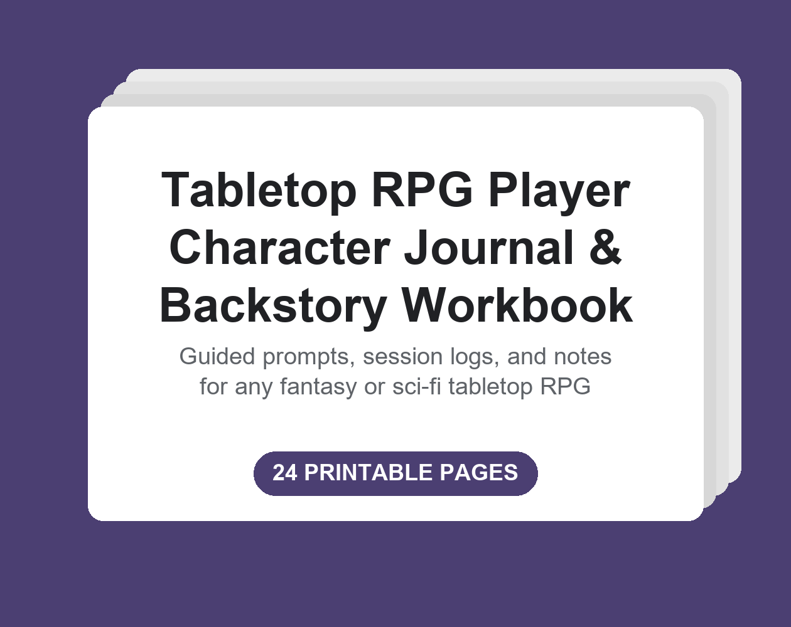

Tabletop RPG Character Journal & Backstory Workbook PDF
$5.00 - instant PDF download - 24 pages
Buy nowSecure checkout by Stripe. You'll get the download right after paying.
Tabletop RPG Player Character Journal & Backstory Workbook
A printable workbook for developing your character's story and keeping track of their journey, session after session. The pages are system-neutral, so they work with any fantasy or sci-fi tabletop role-playing game.
Not sure where to start with a backstory? The guided prompts give you a place to begin. Already have a character in mind? Use the journal and log pages to keep everything in one spot.
What's included
- 24 printable pages in a single PDF, sized for US Letter (8.5 x 11 in)
- Black-and-white, ink-friendly layouts designed to be filled in by hand
- These sections:
- How to Use This Workbook
- Character Concept
- Personality & Appearance
- Backstory Prompts: Origins
- Backstory Prompts: Turning Points
- Relationships & Allies
- Bonds, Flaws & Goals
- Session Journal
- Memorable Quotes & Moments
- Inventory & Loot Notes
- NPCs Met
- Character Growth & Free Notes
Who it's for
- Players of tabletop fantasy and sci-fi RPGs, whether new or experienced, who want to deepen their characters
- Anyone who wants a notebook-style place for between-session notes
- Game masters who want to flesh out NPCs (the NPC log and prompt pages work for this too)
How to print
1. Download the PDF after purchase.
2. Print on US Letter paper at 100% / "actual size" (turn off "fit to page" if it shrinks the pages).
3. Print the whole workbook, or only the pages you need. Reprint pages like the Session Journal as often as you like for personal use.
4. Use a binder, folder or staples to keep your pages together.
Please note
- This is a digital download. No physical item is shipped.
- The workbook is for hand-written use. It is not a fillable digital form.
- It is system-neutral and contains no game rules, stats or character sheets.
- It is original work and is not affiliated with or endorsed by any game publisher.
*Created with AI assistance and reviewed by the shop owner.*
This product was designed with AI assistance and reviewed by the creator before release.